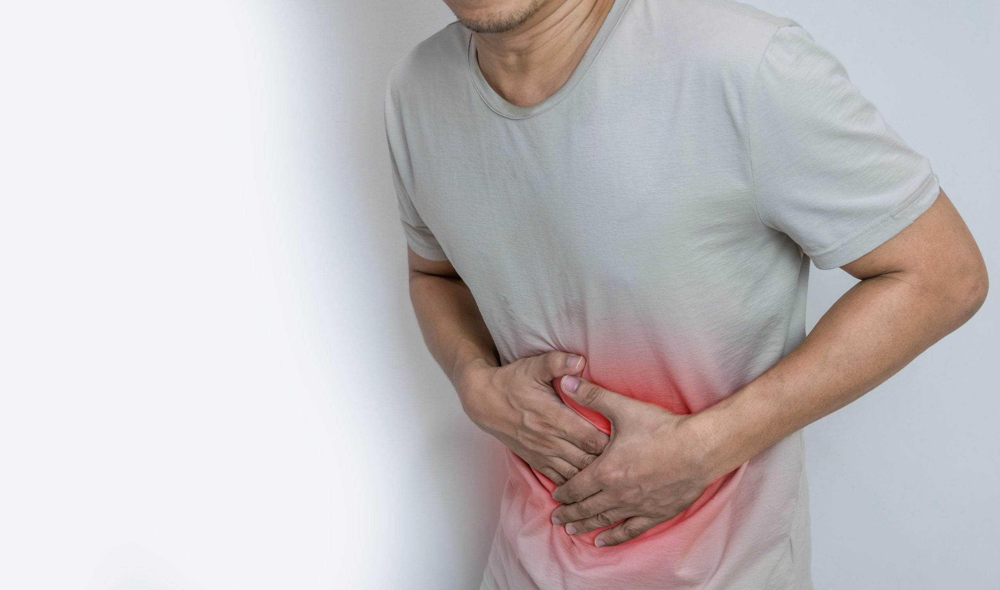

Stomachache:

Abdominal pain is discomfort anywhere in your belly region — between your ribs and your pelvis. We often think of abdominal pain as “stomach pain” or a “stomachache,” but pain in your abdomen could be coming from other organs besides your stomach, too.
Precautions :
Slow Down. Change How Often You Eat. Watch What You Eat. Follow Your Hunches. Drink More Water, Less Soda. Wash Your Hands. Manage Stress. Consider Over-the-Counter Meds.